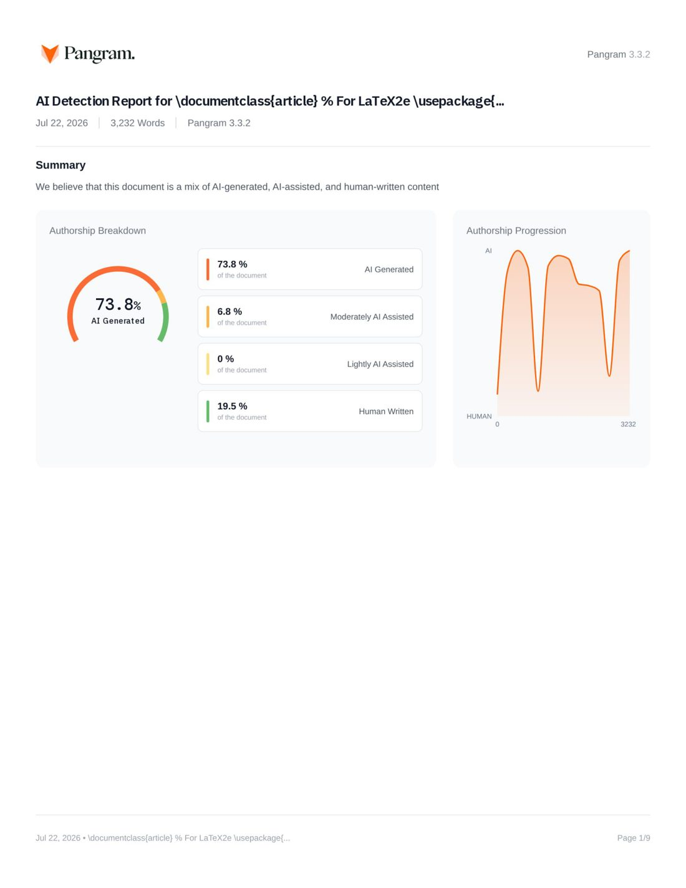

Pangram AI Detection Report — FA0187 Primarily AI-generated

Page 1 of the original Pangram dashboard report — click to open full-size in a new tab. Press the “All” chip on the left to return to the mold-highlighted text.
Main figure — method diagram FIG: AI-side
This paper has no method diagram — 56% of AI papers draw none (vs ~80% of human papers). The absence itself is an AI-typical signal.
✘ no diagram — AI-typical evidence
method-diagram draw rate — human~80% AI44%
LLM monitoring systems that analyze internal hidden states for hallucination detection expose representations that may leak sensitive user information. We investigate whether differential privacy (DP) can protect eigenspectrum-based monitor logs while preserving utility. We compare two DP mechanisms: the standard isotropic Gaussian and the Rank-1 Singular Multivariate Gaussian (R1SMG), which exploits the geometry of high-dimensional queries to achieve dimension-independent noise scaling. At identical privacy budget ($\varepsilon=5$, $\delta=10^{-5}$), R1SMG achieves 360$\times$ lower noise than Gaussian and 4.4 AUROC points higher hallucination detection performance (0.536 vs.\ 0.492). However, both mechanisms fail our pre-registered viability threshold: R1SMG incurs a 13.5-point AUROC drop from the clip-only baseline (0.672), far exceeding the 5-point threshold. Notably, the eigenspectrum compression itself provides substantial inherent privacy---attackers remain at chance level even without DP noise. We conclude that DP-protected eigenspectrum monitoring is not viable at tested privacy budgets with current mechanisms. \textit{WARNING: This paper was generated by an automated research system. The code is publicly available.}\footnote{\url{https://gitlab.com/fars-a/dp-eigenspectrum-monitor-logs}} \input{sections/introduction} \input{sections/related_work} \input{sections/method} \input{sections/experiments}
Conclusion
§ Conclusion We presented the first systematic evaluation of differential privacy for eigenspectrum-based hallucination detection in LLM monitoring systems. Our investigation yields a negative result: at privacy budgets $\varepsilon \leq 20$, DP-protected eigenspectrum monitoring fails to meet our pre-registered viability threshold of $\leq$5-point AUROC degradation. Even R1SMG, which achieves 360$\times$ lower noise than the standard Gaussian mechanism and outperforms it by 4.4 AUROC points, still incurs a 13.5-point drop from the clip-only baseline. Despite this negative finding, our work makes several positive contributions. First, we demonstrate that eigenspectrum compression provides substantial inherent privacy---all attacker models remain at chance level even without DP noise, suggesting that dimensionality reduction itself offers meaningful protection. Second, our pilot diagnostic framework accurately predicts full-experiment outcomes within 2--3\%, enabling efficient mechanism screening. Third, R1SMG's exploitation of rank-1 subspace structure represents a promising direction for high-dimensional DP applications. Future work should explore alternative approaches: local differential privacy applied at the client before transmission, task-specific noise calibration that preserves hallucination-relevant signal structure, or hybrid mechanisms combining cryptographic and statistical protections. \bibliography{analemma} \bibliographystyle{analemma} this short paper
Experiments
§ Experiments § Experimental Setup We evaluate DP-protected eigenspectrum monitoring on Canary-SQuAD, a modified version of SQuAD v2.0~\citep{Rajpurkar2018KnowWY} where each prompt is prepended with a unique 6-character alphanumeric canary ID. The dataset contains 5,928 answerable questions split into calibration (2,000), training (2,000), validation (500), and test (1,428) sets, with $N=200$ canary IDs balanced across splits. Outputs containing the canary substring are filtered to ensure any successful identification must come from the eigenspectrum rather than trivial text leakage. We use Llama-3.1-8B-Instruct~\citep{Dubey2024TheL3} with $K=10$ stochastic responses per prompt (temperature 0.5, top-$p$ 0.99, top-$k$ 5). Hidden states are extracted from layer 16 (middle of 32 layers), yielding $d=4{,}096$-dimensional embeddings and $M = d \cdot K = 40{,}960$-dimensional vectorized matrices. The clipping radius $C_Z = 34.05$ is set to the 95th percentile of calibration norms, achieving approximately 5\% clip rate. DP parameters are $\varepsilon = 5$ and $\delta = 10^{-5}$ for the main comparison, with multi-epsilon analysis at $\varepsilon \in \{5, 10, 20\}$. All experiments use three generation seeds and three attacker seeds, reporting mean and standard deviation. § Noise Regime Diagnostic Before running the full experiment, we conduct a 50-prompt pilot study to validate that R1SMG operates in a non-trivial noise regime. Table~\ref{tab:noise_regime} compares the noise characteristics of both mechanisms. ┌─ [float] Caption: {Noise regime diagnostic comparing R1SMG and Gaussian mechanisms. R1SMG achieves 358$\times$ lower expected noise norm at identical $(\varepsilon=5, \delta=10^{-5})$-DP.} \adjustbox{max width=\textwidth}{ Mechanism & $\sigma$ & $\mathbb{E}[\|n\|_2]$ & Noise/Signal & Pilot Prediction \\ Gaussian DP & 60.74 & 12,293 & 397.9$\times$ & 384.8$\times$ \\ R1SMG DP & 1,857 & \textbf{34.4} (358$\times$ lower) & \textbf{1.1$\times$} & 1.08$\times$ \\ } ─┘ The Gaussian mechanism requires noise with expected norm 12,293, approximately 398$\times$ the typical signal norm of 30.9. This massive noise-to-signal ratio effectively destroys all utility. In contrast, R1SMG achieves expected noise norm of only 34.4, yielding a noise-to-signal ratio of 1.1$\times$---a 358$\times$ reduction. The pilot predictions (1.08$\times$ for R1SMG, 384.8$\times$ for Gaussian) match the full experiment within 2--3\%, validating the diagnostic's reliability. § Main Results Table~\ref{tab:main_results} presents the main comparison across three conditions: clip-only (no DP), Gaussian DP, and R1SMG DP. ┌─ [float] Caption: {Main experimental results comparing DP mechanisms for eigenspectrum-based hallucination detection on Canary-SQuAD. Best utility in bold. All attackers at chance level (Top-1: 0.50\%, Top-10: 5.00\%).} \adjustbox{max width=\textwidth}{ Condition & AUROC $\uparrow$ & PCC & Noise/Signal & Top-1 Acc & Top-10 Acc & Decision \\ Clip-Only (No DP) & \textbf{0.672}$\pm$0.010 & $-$0.468 & --- & 0.72\% & 5.21\% & Baseline \\ Gaussian DP ($\varepsilon$=5) & 0.492$\pm$0.008 ($\downarrow$18.0pt) & +0.016 & 397.9$\times$ & 0.54\% & 5.28\% & REFUTE \\ R1SMG DP ($\varepsilon$=5) & 0.536$\pm$0.009 ($\downarrow$13.5pt) & $-$0.044 & 1.1$\times$ & 0.50\% & 5.05\% & REFUTE \\ } ─┘ The clip-only baseline achieves AUROC of 0.672 with strong negative correlation (PCC $= -0.468$) between EigenScore and correctness, confirming that eigenspectrum analysis provides meaningful hallucination detection signal. Notably, even without DP noise, all attackers remain at chance level (Top-1: 0.72\% vs.\ 0.50\% chance, Top-10: 5.21\% vs.\ 5.00\% chance), demonstrating that the dimensionality reduction from 40,960 to 10 eigenvalues provides substantial inherent privacy. Gaussian DP destroys utility entirely, with AUROC dropping to 0.492 (below random chance of 0.5 for balanced classes) and PCC collapsing to near-zero. The 398$\times$ noise-to-signal ratio overwhelms the signal structure. R1SMG DP substantially outperforms Gaussian, achieving AUROC of 0.536---4.4 percentage points higher at identical privacy budget. The 360$\times$ noise reduction preserves partial signal structure. However, the 13.5-point AUROC drop from baseline exceeds our pre-registered 5-point viability threshold. Both DP mechanisms achieve the privacy goal (attackers at chance), but neither meets the utility requirement. Per our decision rule, we conclude: REFUTE---DP-protected eigenspectrum monitoring is not viable at $\varepsilon = 5$. \subsection{Multi-Epsilon Analysis} ┌─ [float] \includegraphics[width=0.85\textwidth]{privacy_utility_tradeoff.png} Caption: {Privacy-utility tradeoff for R1SMG DP across privacy budgets. (a) Hallucination detection AUROC increases with $\varepsilon$ but remains 10.1 points below clip-only baseline even at $\varepsilon=20$. (b) R1SMG achieves noise-to-signal ratio below 1.0 at $\varepsilon \geq 10$, compared to 398$\times$ for Gaussian DP.} ─┘ Figure~\ref{fig:tradeoff} shows the privacy-utility tradeoff as we relax the privacy budget. AUROC increases monotonically from 0.536 ($\varepsilon=5$) to 0.551 ($\varepsilon=10$) to 0.571 ($\varepsilon=20$), while noise-to-signal ratio decreases from 1.1$\times$ to 0.78$\times$ to 0.55$\times$. Even at $\varepsilon=20$ (relatively weak privacy), the utility gap persists at 10.1 percentage points below baseline. Importantly, attacker accuracy remains at chance level across all epsilon values, indicating that the eigenspectrum compression provides inherent privacy independent of DP noise magnitude. \subsection{Analysis} Why does the utility gap persist despite R1SMG's dramatic noise reduction? We hypothesize that the eigenspectrum is particularly sensitive to perturbations in the rank-1 direction. While R1SMG adds noise with magnitude comparable to the signal (ratio $\approx 1$), the nonlinear eigenvalue transformation amplifies even moderate perturbations. Small eigenvalues, which carry important information about embedding diversity, are especially vulnerable: a perturbation of magnitude $\delta$ to an eigenvalue $\lambda$ produces relative error $\delta/\lambda$, which diverges as $\lambda \to 0$. This suggests that the signal structure, not just magnitude, matters for hallucination detection. The eigenspectrum encodes subtle correlations among response embeddings that are disrupted by any noise, even when the noise norm is small relative to the overall signal. Future work might explore alternative DP mechanisms that preserve spectral structure, such as adding noise directly to the Gram matrix or using task-specific noise calibration.
Introduction
§ Introduction Large language models are increasingly deployed with monitoring systems that analyze internal hidden states for hallucination detection, safety filtering, and quality assurance. These monitoring pipelines extract intermediate representations---such as eigenspectra of hidden state covariance matrices---to estimate generation reliability without requiring external knowledge bases. However, the same internal representations that enable effective monitoring also pose privacy risks: recent work demonstrates that embeddings and hidden states can be inverted to recover substantial portions of input text~\citep{Morris2023TextER}, and that language model mappings are theoretically injective and hence invertible~\citep{nikolaou2025languagemodelsinjectiveinvertible}. Even deeper layers, contrary to intuition, do not provide privacy protection~\citep{Dong2025DepthGA}. Differential privacy (DP) offers a principled framework for protecting sensitive data through calibrated noise addition~\citep{Dwork2014TheAF}. However, applying DP to high-dimensional internal states faces a fundamental challenge: the standard isotropic Gaussian mechanism requires noise with expected norm scaling as $O(\sqrt{M})$ with dimension $M$, making it impractical for LLM hidden states where $M \approx 40{,}000$. This raises a critical question: can we release DP-protected monitor logs while preserving hallucination detection utility? We investigate this question by combining two key ideas. First, eigenspectrum compression reduces 40,960-dimensional hidden state matrices to just $K=10$ eigenvalues, potentially providing inherent privacy through dimensionality reduction. Second, the Rank-1 Singular Multivariate Gaussian (R1SMG) mechanism~\citep{Ji2023LessIM} achieves dimension-independent noise scaling by exploiting the geometry of DP proofs, offering a potential path to practical privacy protection. Our contributions are: \item We provide the first evaluation of differential privacy for eigenspectrum-based hallucination detection, establishing a rigorous privacy-utility tradeoff framework with pre-registered decision criteria. \item We demonstrate that R1SMG achieves 360$\times$ lower noise than the Gaussian mechanism at identical privacy budget ($\varepsilon=5$, $\delta=10^{-5}$), yielding 4.4 AUROC points higher utility. \item We discover that eigenspectrum compression provides substantial inherent privacy: even without DP noise, canary-ID attackers remain at chance level, suggesting the dimensionality reduction itself destroys identifying information. \item We conclude with a negative result: despite R1SMG's dramatic noise reduction, DP-protected eigenspectrum monitoring incurs unacceptable utility loss (13.5-point AUROC drop) at tested privacy budgets, informing practitioners that alternative protection mechanisms are needed.
Method
§ Method
§ Problem Setup
We consider a deployment scenario where an LLM monitoring system logs internal-state-derived statistics for hallucination detection, debugging, or quality assurance. The monitoring pipeline computes an eigenspectrum from hidden state embeddings across multiple stochastic responses, releasing $K$ eigenvalues per prompt as the monitor log.
\paragraph{Threat Model.} We assume an honest-but-curious log consumer who observes the released eigenspectrum logs and attempts to identify users or recover sensitive prompt information. The attacker has access to the DP mechanism parameters ($\varepsilon$, $\delta$, clipping radius $C_Z$) and can train adaptive classifiers on the defended distribution. This models realistic scenarios where monitoring logs are shared with third parties for auditing or analysis.
\paragraph{Privacy Goal.} We aim to protect user identity from canary-ID attacks, where an adversary attempts to link eigenspectrum logs to specific users based on synthetic identifiers embedded in prompts. Success is measured by whether attacker accuracy remains at chance level (Top-1: 0.5\%, Top-10: 5.0\% for $N=200$ canary IDs).
§ Eigenspectrum Monitoring Pipeline
┌─ [float]
\includegraphics[width=0.95\textwidth]{framework_overview.jpeg}
Caption: {Overview of the DP-protected eigenspectrum monitoring pipeline. Stage 1: Generate $K$ stochastic responses per prompt. Stage 2: Extract hidden states from the middle layer and compute the eigenspectrum. Stage 3: Apply DP noise (R1SMG or Gaussian) to clipped eigenvalues. Stage 4: Compute EigenScore for hallucination detection. R1SMG achieves 360$\times$ lower noise than Gaussian at equivalent privacy.}
─┘
Our pipeline, illustrated in Figure~\ref{fig:framework}, consists of four stages. First, for each prompt $x$, we generate $K$ stochastic responses using temperature sampling. Second, we extract the last-token hidden state $s_k \in \mathbb{R}^d$ from the middle layer for each response $k \in \{1, \ldots, K\}$, forming an embedding matrix $Z = [s_1, \ldots, s_K] \in \mathbb{R}^{d \times K}$. We center across responses using $J_K = I_K - \frac{1}{K}1_K1_K^\top$ and compute the $K \times K$ Gram matrix $\Sigma = \frac{1}{d}(ZJ_K)^\top(ZJ_K)$. The eigenspectrum $\{\lambda_1, \ldots, \lambda_K\}$ of $\Sigma + \alpha I$ (with regularization $\alpha = 0.001$) captures the diversity of hidden state representations.
Third, we apply DP noise to the clipped embedding vector $\text{vec}(Z)$ before computing the eigenspectrum. Fourth, the EigenScore is computed as $\frac{1}{K}\sum_{i=1}^K \log(\lambda_i)$, following INSIDE~\citep{Chen2024INSIDELI}. Lower EigenScore indicates higher confidence (correlated embeddings), while higher values suggest potential hallucination (diverse embeddings).
§ Differential Privacy Mechanisms
We enforce per-prompt $(\varepsilon, \delta)$-differential privacy~\citep{Dwork2014TheAF} on the released eigenspectrum. The sensitive object is $f(x) = \text{vec}(Z(x)) \in \mathbb{R}^M$ where $M = d \cdot K$. We apply deterministic $\ell_2$ clipping: $Z_{\text{clip}} = Z \cdot \min(1, C_Z / \|\text{vec}(Z)\|_2)$, yielding sensitivity $\Delta_2 = 2C_Z$.
\paragraph{Gaussian Mechanism.} The standard approach adds isotropic noise $n \sim \mathcal{N}(0, \sigma_G^2 I_M)$ to $\text{vec}(Z_{\text{clip}})$, with $\sigma_G$ calibrated via the analytic Gaussian mechanism~\citep{Balle2018ImprovingTG}. However, the expected noise norm $\mathbb{E}[\|n\|_2] = \sigma_G\sqrt{M}$ scales with dimension, making this impractical for high-dimensional hidden states ($M \approx 40{,}000$).
\paragraph{R1SMG Mechanism.} The Rank-1 Singular Multivariate Gaussian (R1SMG) mechanism~\citep{Ji2023LessIM} adds rank-1 structured noise: sample $v$ uniformly from the unit sphere $\mathcal{S}^{M-1}$, sample $z \sim \mathcal{N}(0, 1)$, and set $n = v \cdot \sqrt{\sigma^*} \cdot z$. The key insight is that R1SMG exploits the geometry of DP proofs to achieve expected noise norm $\mathbb{E}[\|n\|_2] = \sqrt{\sigma^* \cdot 2/\pi}$, which is independent of dimension $M$. For our setting with $\varepsilon = 5$ and $\delta = 10^{-5}$, R1SMG achieves noise-to-signal ratio of approximately 1.1$\times$ compared to 398$\times$ for Gaussian, a 360$\times$ reduction.
After adding noise, we reshape the perturbed vector back to $Z_{\text{priv}} \in \mathbb{R}^{d \times K}$ and compute the eigenspectrum. By DP post-processing, any function of $Z_{\text{priv}}$ (including the eigenspectrum and EigenScore) inherits the same $(\varepsilon, \delta)$-DP guarantee.
§ Canary-ID Attack Framework
We evaluate privacy through canary-ID prediction, a membership inference-style attack where the adversary attempts to identify which of $N$ synthetic user IDs generated a given eigenspectrum log. Each prompt is prepended with a unique 6-character alphanumeric canary ID, and outputs containing the canary substring are filtered to ensure any successful prediction must come from the logged eigenspectrum rather than trivial text leakage.
We train three adaptive attacker models on the defended distribution: (1) logistic regression on the $K$-dimensional eigenspectrum, (2) a 2-layer MLP classifier ($K \to 128 \to N$), and (3) a denoise-then-classify pipeline that first trains a denoiser to estimate clean eigenspectra from noisy observations, then applies an MLP to the denoised features. We report the maximum leakage across all attackers.
§ Decision Rule
We pre-register a viability threshold: DP-protected eigenspectrum monitoring is deemed viable if (1) AUROC drops by at most 5 percentage points from the clip-only baseline, and (2) all attackers achieve chance-level accuracy. If the AUROC drop exceeds 5 points, we conclude that DP protection incurs unacceptable utility loss at the tested privacy budget.
Related Work
§ Related Work
\paragraph{Hallucination Detection in LLMs.}
Detecting hallucinations in large language models has emerged as a critical research area. Black-box approaches such as SelfCheckGPT~\citep{Manakul2023SelfCheckGPTZB} leverage sampling consistency to identify unreliable generations without access to model internals. Semantic uncertainty methods~\citep{Kuhn2023SemanticUL} cluster semantically equivalent responses to estimate generation confidence, while semantic entropy probes~\citep{kossen2024semanticentropyprobesrobust} train lightweight classifiers on internal representations. White-box approaches exploit the observation that LLM internal states encode truthfulness signals~\citep{Azaria2023TheIS}. INSIDE~\citep{Chen2024INSIDELI} demonstrates that eigenspectrum analysis of hidden state covariance matrices provides effective hallucination detection, motivating our investigation of privacy-preserving variants. Prompt-guided methods~\citep{Zhang2024PromptGuidedIS} further refine internal state analysis through targeted probing.
\paragraph{Privacy Risks in LLM Systems.}
LLM deployments expose multiple privacy attack surfaces. Text embeddings can be inverted to recover substantial portions of original inputs~\citep{Morris2023TextER}, and recent work proves that language model mappings are theoretically injective and hence invertible~\citep{nikolaou2025languagemodelsinjectiveinvertible}. Internal hidden states present even greater risks: \citet{Dong2025DepthGA} demonstrate that deeper layers, contrary to intuition, do not provide privacy protection and can be inverted to reconstruct prompts. Collaborative inference settings enable prompt inversion attacks~\citep{Qu2025PromptIA}, while training data extraction remains a persistent concern~\citep{Ahmed2026ExtractingBF}. These findings motivate the need for principled privacy protection in monitoring systems that log internal representations.
\paragraph{Differential Privacy for High-Dimensional Data.}
Differential privacy~\citep{Dwork2014TheAF} provides rigorous privacy guarantees through calibrated noise addition. The Gaussian mechanism with analytic calibration~\citep{Balle2018ImprovingTG} enables tight noise bounds for continuous queries. However, high-dimensional data poses fundamental challenges: isotropic noise scales with dimension, making standard mechanisms impractical for LLM hidden states. Private covariance estimation~\citep{Amin2019DifferentiallyPC,Dong2022DifferentiallyPC} and the Wishart mechanism for PCA~\citep{Jiang2015WishartMF} address structured matrix queries but do not directly apply to eigenspectrum monitoring. Our work investigates whether the rank-1 structure of eigenspectrum changes enables more efficient noise calibration.
\paragraph{Private LLM Inference.}
Recent work addresses privacy in LLM inference through various mechanisms. Split-and-denoise~\citep{Mai2023SplitandDenoisePL} applies local differential privacy to intermediate activations in split inference settings. Cascade~\citep{Thomas2025CascadeTP} proposes token sharding across multiple servers to prevent any single party from observing complete sequences. Concept-aware mechanisms~\citep{Tsai2026ConceptAwarePM} defend against embedding inversion by adding semantically-informed noise. Surveys on private transformer inference~\citep{Li2024ASO} and LLM privacy~\citep{Miranda2024PreservingPI} provide comprehensive overviews of the threat landscape. Our work differs by focusing specifically on monitoring systems that log eigenspectrum statistics rather than protecting inference itself.